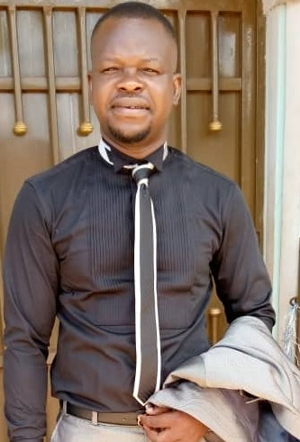

<!DOCTYPE html>
<html lang="fr"></html>
<head>
    <meta charset="UTF-8">
    <meta http-equiv="X-UA-Compatible" content="IE=edge">
    <meta name="viewport" content="width=device-width, initial-scale=1.0">
    <front size="10pt"></front>
    <title>Mon CV </title>
    <link rel="stylesheet" href="./tente/aloumon.css">
</head>
<body>
    <div class="cv-container">
      <div class="left-column">
        <div class=" portrait"> 
        
        <div class="section">
            <p>
             <i class="icon fab fa-linkedin text-darkblue"></i><strong> Adikah Komi Matthieu,</strong> <strong><u> Né:</u></strong><i> le 21 septembre 1985 à Lomé, </i><strong><u>  Préfecture:</u><i> du golfe</i>
            </p>
        </div>
        <div class="section">           
            <p><i>Enseignant de Mathématiques et de sciences physiques</i></p>
               <h2><u>À PROPOS</u></h2>
          <p>
            L"<strong>Enseignement</strong> est l'une des activités la plus pationnante 
            de ma vie. <strong>Enseigner </strong>est l'une des moyens pour moi 
            de <strong>transformer les Vies</strong>, en amenant les vies à grandir 
            en connaissance et à vivre cette connaissance selon leurs différentes 
            appartenances réligieux et coutumes. 
          </p>
          <p>
            <strong>Bien que la mathématique constitue l'axe logique de la raison</strong>, 
            elle est la matiere la plus stressante des apprenants; mais tout compte fait
             par les conseils et les approches nous arrivons à retablr cette volonté d'étudier
               et d'etre disciple de cette matière.   
          </p>
        </div>
        <div class="section">
                  <h2><u>COMPÉTENCES</u></h2>
          <ul>
            <li><strong>Enseignement de la mathématique</strong></li>
            <li><strong>Gestion de classe</strong></li>
            <li><strong>Création de supports pédagogiques</strong></li>
            <li><strong>Utilisation des outils numériques pour l'enseignement</strong></li>
          </ul>
        </div>  
        </div>
        <div class="right-column">           
         <div class="header">
                  <h1>Adikah <spam class ="text-darkblue" > Komi Matthieu</spam></h1>
                <p><i>Enseignant de Mathématiques et  de sciences physiques</i>
                </p>
                <ul class="contact-info">
                  <li>
                      <i class="icon fas fa-at text-blue"></i>
                      <a href="mailto: saintadik@gmail.com"> saintadik@gmail.com</a></li> 
                    <li><i class="icon fas fa-phone text-blue"></i> +226 06 07 41 71||+226 61 02 03 53</a></li>
                  <li><i class="icon fas fa-map-marker-alt text-blue"></i> Ouagadougou, Burkina-Faso</li>
                </ul>
        </div>
        <div class="conten">
        <div class="section">
          <h2><u>EXPÉRIENCES</u> <br> <spam class="text-blue"><u>PROFESSIONNELLES</u></spam></h2>
          <p>
           <strong><u>2015 </u><i class="fas fa-long-arrow-alt-right"></i><u> 2025:</u></strong>
           <br><strong>Enseignant de Mathématiques et de sciences physiques</strong> - dans les lycées privés de Ouagadougou;
         <br>  <strong><u>2010 </u> <i class="fas fa-long-arrow-alt-right"></i><u> 2015:</u></strong>
           <br><strong>Enseignant de SVT et de sciences physiques</strong> au lycée publique Bè-plage à lomé, en tant que agent de l'état;
          </p>
          <ul class="experience-list">
            <li>
              <strong>Enseignant en Mathématique et physique:</strong> au centre de Formation A au carré (Assistance et Appui) <br>depuis Janvier 2022 à nos jours.</li>
            <li>
              <strong>secouriste</strong>
          </ul>
        </div>
        <div class="section">
          <h2><u>ETUDES UNIVERSITAIRES & FORMATIONS</u></h2>
          <ul>
            <li>
              <strong>Licence en Biologie et Physiologie Animal</strong> - Université de Lomé
              <br>2007 - 2011
            </li>
            <li>
              <strong>Baccalauréat Scientifique série D </strong> - Lycée de gbényédzi-Kopé à Lomé
              <br>2007
            </li>
            <li>
              <strong>Formation en Pédagogie et Didactique des Mathématiques</strong> - Institut National de Formation des Enseignants (INFE)
              <br>2010
            </li>
            <li>
              <strong>Formation en Secourisme</strong>  par la croix rouge du TOGO
              <br>2005
              <div class="section">
          <h2><u>LANGUES</u></h2>
          <ul>
            <li><strong><u>Français:</u></strong> lu et couramment parlé </li>
            <li><strong><u></strong> compétence professionnelle</u></li>
            <li><strong><u>Ewe, Tui et Anago:</u></strong> langues maternelles</li>
          </ul>
        </div>
        <div class="section">
          <h2><u>LOISIRS</u></h2>
          <ul>
            <li><strong><u>Lecture:</u></strong> Romans et essais</li>
            <li><strong><u>Sport:</u></strong> Football et course à pied</li>
            <li><strong><u>Musique:</u></strong> Écoute de musique classique et moderne</li>
          </ul>
        </div>
            </li>
          </ul>
        </div>
      </div>
   </div>
  </div>
</body>
</html>
    
        